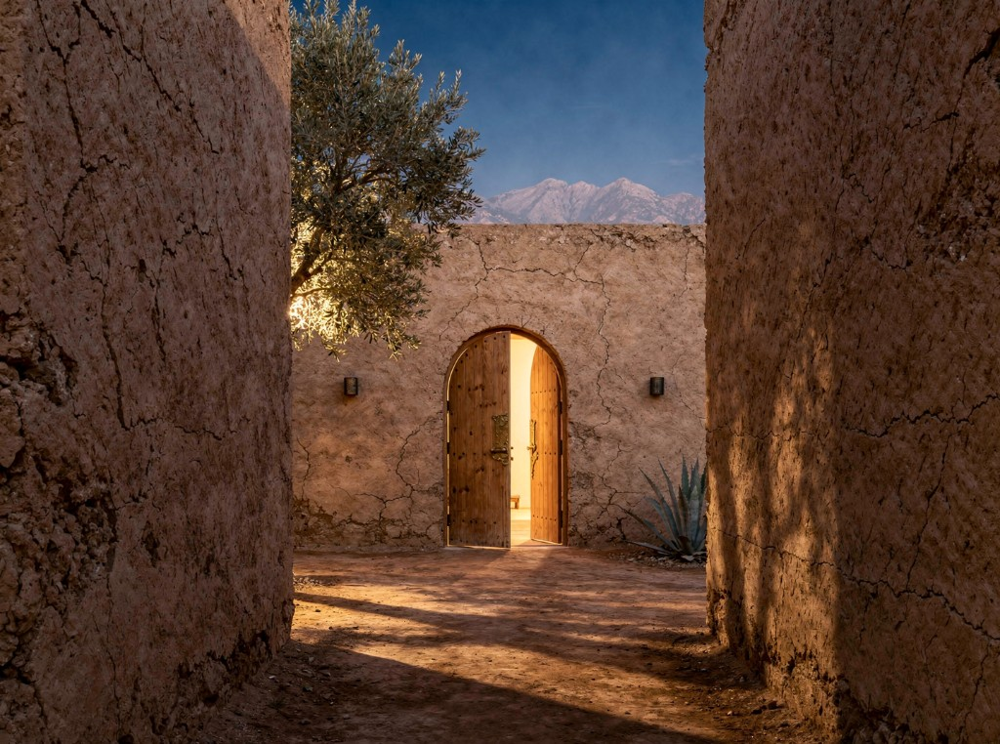
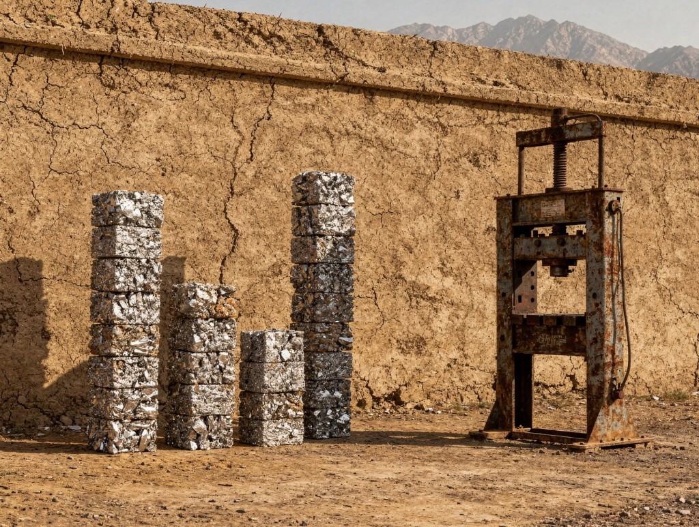

Éco et territoire
Zéro dépendance externe
Le territoire produit
Un hôtel qui ne
consomme pas.
Il produit.

L'infrastructure éco-durable de Toile Blanche Marrakech n'est pas un argument marketing. C'est une nécessité opérationnelle dans un territoire en crise hydrique, et c'est une décision architecturale cohérente avec la déclaration artistique du lieu. Un territoire déclaré œuvre ne peut pas dépendre de réseaux externes fragiles.
Les études de marché sur les voyageurs premium britanniques et américains documentent une prime tarifaire de 15 à 20% pour les hébergements éco-certifiés avec programme artistique intégré. À 400€ d'ADR cible, cela représente 60 à 80€ de premium que l'infrastructure éco justifie directement. Ce n'est pas un coût supplémentaire - c'est un générateur de revenu.
Le label Eco-Art
Toile Blanche Marrakech
Eco-Art Gallery Hotel
La combinaison d'une infrastructure durable réelle (solaire, eau, recyclage) et d'un programme artistique vivant (galerie, résidences, studio) crée une catégorie de positionnement unique dans le Haouz. Aucun concurrent immédiat ne combine les deux à ce niveau. C'est la justification de l'ADR et le moteur de la presse.
Énergie solaire
Installation photovoltaïque couvrant 70% des besoins électriques. Eau chaude sanitaire 100% solaire thermique. Stockage batterie pour les pics de consommation nocturne.
Impact ADR : +15-20% voyageurs UK/US éco-sensibles
Autonomie eau - Infrastructure critique
Citerne en béton armé. Station de pompage triplex. Filtration UV conforme aux normes sanitaires. Le Haouz est en 6e année de sécheresse sévère.
Sécurité opérationnelle totale - zéro risque fermeture
Micro-STEP - Recyclage eaux grises
Station d'épuration traitant les eaux grises pour irrigation des jardins. Légalement obligatoire au Maroc depuis 2024. Coût intégré dans le budget rénovation.
Conformité légale totale + économie ~30K€/an eau
Jardins et paysagement local
Palette végétale exclusivement locale. Irrigation par eaux recyclées. Éclairage sol uniquement. La biodiversité locale est le programme paysager.
Cohérence avec la déclaration artistique - rien n'est ajouté
Les Compressions
Les déchets résiduels sont compressés en œuvres titrées et datées. La propriété ne produit pas de déchets. Elle produit de la matière en attente de déclaration.
Œuvres entrantes dans la collection Leroy Brothers
Fondation Toile Blanche - Tagadirt
10% du résultat net affecté à Tagadirt : eau, reconstruction, formation, emploi local.
Engagement contractuel - inscrit dans le pacte d'associés
